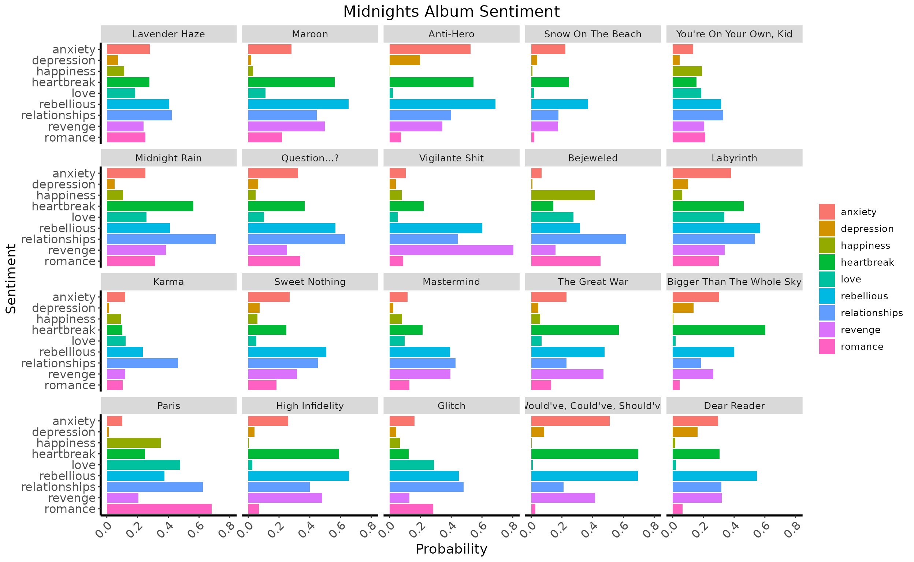
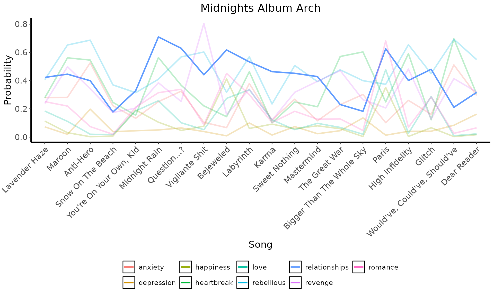
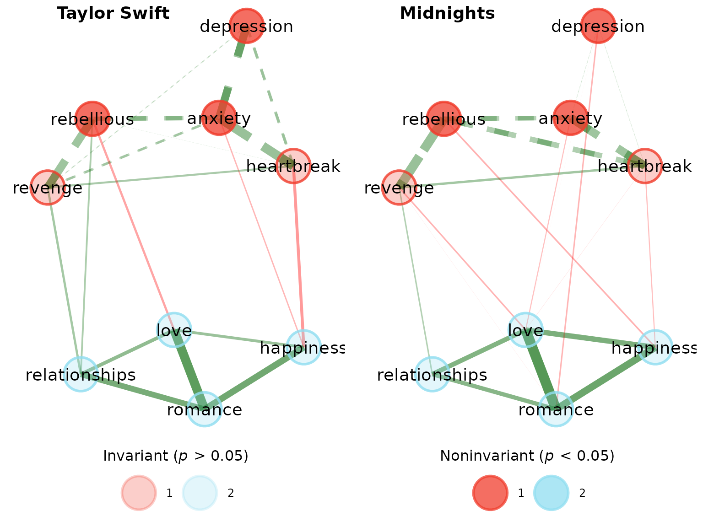

Transformers models are taking the data science world by storm. Their rise in popularity is due to their unparalleled ability to understand contextual information in language. In short, these models can quantify the qualitative.
To demonstrate how transformers natural language processing (NLP) can be used in combination with {EGAnet}, we’ll use an example of Taylor Swift’s first and most recent albums: Taylor Swift and Midnights.
Set Up Transformers NLP and Genius API
To get started, the {text} package needs to be installed and set up (see {text} installation for instructions on getting set up).
Once set up, load {text}:
We’ll use another package called {simpleRgenius} to scrape lyrics from the Genius lyrics website. This package needs to be installed from GitHub and loaded:
# Install {devtools} (if necessary)
if(!"devtools" %in% unlist(lapply(.libPaths(), list.files))){
install.packages("devtools")
}
# Install {simpleRgenius}
devtools::install_github("AlexChristensen/simpleRgenius")
# Load {simpleRgenius}
library(simpleRgenius)After installing {simpleRgenius}, you’ll need to set up an API with Genius (only necessary to reproduce this example). You can follow the instructions here.
Scraping Lyrics
At this point, you should have loaded {text} and {simpleRgenius} as well as imported your Genius API into R’s environment (if following along and reproducing the code). The next step is to get all of the songs for Taylor Swift’s Midnights album:
# First, let's get all of the song names
midnights_songs <- c(
"Lavender Haze", "Maroon", "Anti-Hero",
"Snow On The Beach", "You're On Your Own, Kid",
"Midnight Rain", "Question...?", "Vigilante Shit",
"Bejeweled", "Labyrinth", "Karma",
"Sweet Nothing", "Mastermind",
"The Great War", "Bigger Than The Whole Sky",
"Paris", "High Infidelity", "Glitch",
"Would've, Could've, Should've",
"Dear Reader"
)
# Next, let's get the lyrics
midnights_lyrics <- get_lyrics(
artist_name = "Taylor Swift",
song_names = midnights_songs
)Perform Zero-shot Classification
Next, zero-shot classification can be performed. There are many different models on huggingface to choose from. We’ll use Cross Encoder’s base RoBERTa model:
midnights_zero <- textZeroShot(
sequences = midnights_lyrics$Lyric, # text
candidate_labels = c(
"anxiety", "depression", "happiness",
"heartbreak", "love", "relationships",
"rebellious", "revenge", "romance"
),
# theme (same as sentiment analysis)
model = "cross-encoder/nli-roberta-base",
# model to use
multi_label = TRUE
# whether multiple labels can be true
)Reformat Zero-shot Output into Long Format
To analyze data with {EGAnet}, data need to be in wide format. But first, let’s do some basic NLP and visualization. The following code will (1) reformat the data into long format, (2) remove non-existent labels, (3) add back song names, and (4) summarize the lyrics by song:
# Load {tidyverse}
library(tidyverse)
# Wrangle the data
midnights_long <- midnights_zero %>%
pivot_longer(
cols = starts_with("labels_") | starts_with("scores_"),
# Obtain columns with labels and scores
names_to = c(".value", "label_number"),
# Push the names to new columns
names_pattern = "(labels|scores)_(x_.*)"
# Set up the patterning for labels and scores
)
# Remove NAs
midnights_long <- na.omit(midnights_long)
# Initialize vector for song names
song_names <- character(length = nrow(midnights_long))
# Create loop to store song names
for(i in 1:nrow(midnights_long)){
# Get matches for lyric
lyric_match <- min(
match( # Use `min` to get only one index
midnights_long$sequence[i],
midnights_lyrics$Lyric
)
)
# Get song name
song_names[i] <- midnights_lyrics$Song[lyric_match]
}
# Create vector to add songs back
midnights_long$song_name <- song_names
# Summarize by song
midnights_summary <- midnights_long %>%
group_by(song_name, labels) %>%
summarize(
Probability = mean(
scores, na.rm = TRUE
)
)Basic NLP Visualization
Keep Order of Songs
# Before visualizing...
## Create factor to keep songs in order
midnights_summary$song_name <- factor(
midnights_summary$song_name,
levels = midnights_songs
)Bar Plot by Song
# Visualize using histogram
ggplot(
data = midnights_summary,
aes(x = Probability, y = labels, fill = labels)
) +
facet_wrap(~song_name) +
geom_histogram(stat = "identity") +
labs(
x = "Probability",
y = "Sentiment",
title = "Midnights Album Sentiment"
) +
scale_y_discrete(limits = rev) + # reverse order
theme( # basic theme
panel.background = element_blank(),
legend.title = element_blank(),
plot.title = element_text(size = 16, hjust = 0.5),
axis.line = element_line(linewidth = 1),
axis.text = element_text(size = 12),
axis.title = element_text(size = 14),
strip.text = element_text(size = 10),
legend.text = element_text(size = 10),
axis.text.x = element_text(angle = 45, hjust = 1)
)
Album Arch of “relationships” Theme
# Visualize using line plot
midnights_summary %>%
mutate( # focus on relationships across songs
alpha = ifelse(labels == "relationships", 1, 0.25)
) %>%
ggplot(
aes(
x = song_name, y = Probability, group = labels,
color = labels, alpha = alpha
)
) +
geom_line(linewidth = 1) +
labs(
x = "Song",
y = "Probability",
title = "Midnights Album Arch"
) +
theme( # basic theme
panel.background = element_blank(),
legend.title = element_blank(),
plot.title = element_text(size = 16, hjust = 0.5),
axis.line = element_line(linewidth = 1),
axis.text = element_text(size = 12),
axis.title = element_text(size = 14),
legend.text = element_text(size = 10),
legend.position = "bottom",
legend.key = element_rect(fill = NA), # remove grey box
axis.text.x = element_text(angle = 45, hjust = 1)
) +
scale_alpha_identity(guide = "none")
Get Dimensionality of Album
Reformat Lyrics into Wide Format
# Make each sentiment a column with values
midnights_wide <- midnights_long %>%
pivot_wider(
names_from = "labels",
values_from = "scores"
) %>%
group_by(song_name, sequence) %>%
summarize(
anxiety = sum(anxiety, na.rm = TRUE), # CHANGE!
depression = sum(depression, na.rm = TRUE),
happiness = sum(happiness, na.rm = TRUE),
heartbreak = sum(heartbreak, na.rm = TRUE),
love = sum(love, na.rm = TRUE),
relationships = sum(relationships, na.rm = TRUE),
rebellious = sum(rebellious, na.rm = TRUE),
revenge = sum(revenge, na.rm = TRUE),
romance = sum(romance, na.rm = TRUE)
)Perform EGA
# Get summary
summary(midnights_ega)Model: GLASSO (EBIC with gamma = 0.5)
Correlations: auto
Lambda: 0.0860989626435201 (n = 100, ratio = 0.1)
Number of nodes: 9
Number of edges: 21
Edge density: 0.583
Non-zero edge weights:
M SD Min Max
0.130 0.183 -0.077 0.486
----
Algorithm: Walktrap
Number of communities: 2
anxiety depression happiness heartbreak love
1 2 2 1 2
relationships rebellious revenge romance
2 1 1 2
----
Unidimensional Method: Louvain
Unidimensional: No
----
TEFI: -5.021Check Stability of EGA
# Get summary
summary(midnights_boot)Model: GLASSO (EBIC)
Correlations: auto
Algorithm: Walktrap
Unidimensional Method: Louvain
----
EGA Type: EGA
Bootstrap Samples: 500 (Parametric)
2 3
Frequency: 0.996 0.004
Median dimensions: 2 [1.88, 2.12] 95% CI
# Perform dimension stability
dimensionStability(midnights_boot)EGA Type: EGA
Bootstrap Samples: 500 (Parametric)
Proportion Replicated in Dimensions:
anxiety depression happiness heartbreak love
1.000 0.528 1.000 1.000 1.000
relationships rebellious revenge romance
0.998 0.998 0.996 1.000
----
Structural Consistency:
1 2
0.996 0.558 Overall, the dimensions are relative stable. The
depression theme goes between the first and second
dimension (roughly positive and negative valence themes,
respectively).
Invariance between the Taylor Swift and Midnights Albums
Taking this analysis a step further, the themes can be analyzed for configural and metric invariance to determine whether there are thematic differences in lyrics between Taylor Swift’s first and most recent albums.
This analysis mimics analyses that might be performed using text data from an intervention or therapy study (e.g., pre/post, experiment/control).
The same zero-shot classification analyses (including the same Cross Encoder RoBERTa model) should be performed using the same themes (i.e., classes).
Set Up for Invariance
Check out the mean probabilities of each theme across the albums
# Look at the mean probabilities of both
# the Taylor Swift and Midnights albums
colMeans(swift_wide[,-c(1:2)]) anxiety depression happiness heartbreak love
0.29990807 0.08411358 0.17911406 0.43607021 0.18423720
relationships rebellious revenge romance
0.43535133 0.63489752 0.34377482 0.26128967 anxiety depression happiness heartbreak love
0.26287701 0.06501335 0.09913873 0.38547405 0.14203493
relationships rebellious revenge romance
0.44492999 0.50933669 0.34219791 0.20906364 Get p-values for t-tests between each theme
sapply(
colnames(swift_wide)[-c(1:2)], function(theme){
t.test(
swift_wide[,theme], midnights_wide[,theme],
var.equal = TRUE
)$p.value
}
) anxiety depression happiness heartbreak love
0.297232759 0.131226252 0.020208667 0.273479141 0.260503614
relationships rebellious revenge romance
0.808364926 0.003466896 0.965060122 0.169222094 Based on means, there are differences between happiness
and rebellious.
To get set up for invariance, groups need to be
created:
Perform Invariance
# Perform invariance
ega_invariance <- invariance(
data = combined_wide,
groups = groups,
seed = 12
)
# View and plot results
ega_invariance; plot(ega_invariance)
[1;mInvariance Results
[0m
[4;m
Comparison: Taylor Swift vs Midnights
[0m
Membership Difference p p_BH sig Direction
anxiety 1 0.286 0.014 0.042 * Taylor Swift > Midnights
depression 1 0.319 0.006 0.027 ** Taylor Swift > Midnights
heartbreak 1 -0.121 0.276 0.497
rebellious 1 -0.256 0.006 0.027 ** Taylor Swift < Midnights
revenge 1 0.025 0.752 0.752
happiness 2 -0.084 0.532 0.752
love 2 -0.122 0.262 0.497
relationships 2 0.032 0.612 0.752
romance 2 0.037 0.736 0.752
----
Signif. codes: 0 '***' 0.001 '**' 0.01 '*' 0.05 '.' 0.1 'n.s.' 1
Based on invariance, there is configural invariance but
metric non-invariance for anxiety, depression,
and rebellious themes. anxiety and
depression themes had greater connectivity in the
Taylor Swift album while rebellious themes had
greater connectivity in the Midnights album. In essence, the
two albums captured relatively different negative themes.